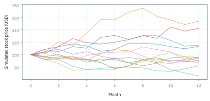
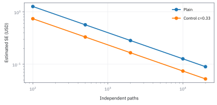
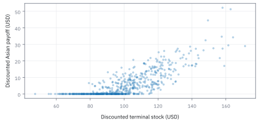
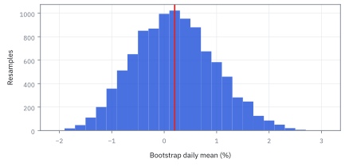
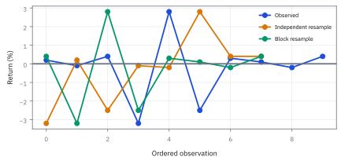

17.5 Monte Carlo and the Bootstrap
สุ่มได้ราคา 7.84 ดอลลาร์ยังไม่พอ ต้องรู้ว่าค่าประมาณนี้คลาดจากการสุ่มได้แค่ไหน เราจะเดินเส้นทางราคาด้วยมือ คำนวณผลจ่าย แล้วใช้ standard error ตัดสินว่าควรเพิ่มการสุ่มหรือใช้วิธีลดความคลาด
desk ต้องเสนอราคา Asian call อายุหนึ่งปี: หุ้น \$100 strike \$100 ดอกเบี้ย 2% ความผันผวน 30% จ่ายตามราคาเฉลี่ยเลขคณิตของ 12 สิ้นเดือน ไม่มีสูตรง่ายแบบ Black–Scholes ให้ใช้ตรง ๆ จึงสุ่ม 10,000 เส้นทางได้ \$7.84 ส่วนต่างที่ desk จะได้คือ \$0.05 ต่อสัญญา เอา \$7.84 ไปเสนอได้เลยไหม?
ลองตอบก่อนเปิดเฉลย
ยังไม่ควรอาศัยตัวเลขเดียว ผลจ่ายของแต่ละเส้นทางมี standard deviation ราว \$12.59 จึงได้ SE $12.59/\sqrt{10{,}000}=\$0.126$ ช่วงเชื่อมั่นประมาณ 95% ภายใต้แบบจำลองคือ \$7.59 ถึง \$8.09 กว้างกว่าส่วนต่างสิบเท่า การใช้ตัวควบคุมแบบเรขาคณิตกับ 100,000 เส้นทางในตัวอย่างจะลดช่วงเป็นราว \$7.778 ± 0.003 แต่ยังไม่ใช่การรับรองราคาตลาดจริง
สิ่งที่เราจะสร้าง
10.1 สร้างเส้นทางราคาแบบ GBM และ 13.6 ใช้ drift ของราคาหุ้นไม่จ่ายปันผลเท่ากับ $r$ ภายใต้มาตรวัดที่ใช้ตั้งราคา ส่วน 3.3 อธิบาย standard error หน้านี้จะสุ่มเส้นทาง เฉลี่ยผลจ่ายที่คิดลด แล้ววัดความคลาดจากการสุ่มสำหรับสัญญาที่ไม่มีสูตรง่ายแบบ Black–Scholes ให้ใช้ตรง ๆ
เริ่มจากหนึ่งเส้นทางกับคู่แฝด คำนวณราคาและ SE แล้วลด variance ด้วย antithetic และ control variate ส่วนท้ายใช้ bootstrap สุ่มจากข้อมูลที่มี โดยไม่กำหนดรูปการแจกแจงล่วงหน้า แต่ยังต้องเลือกว่าจะถือว่าวันต่าง ๆ อิสระกันหรือควรสุ่มเป็นท่อน
ศัพท์ที่ใช้ในหัวข้อนี้
- Monte Carlo
- การประมาณค่าคาดหวังด้วยการสุ่มผลลัพธ์จำนวนมากแล้วเฉลี่ย ใช้เมื่อการคำนวณตรงทำได้ยาก และใช้ตรวจเทียบกับกรณีที่รู้คำตอบแล้วได้ด้วย
- Asian call
- สัญญาที่ผลจ่ายขึ้นกับราคาเฉลี่ยตามจุดสังเกต จึงไม่ขึ้นกับราคาวันสุดท้ายเพียงจุดเดียว โจทย์นี้ใช้ค่าเฉลี่ยเลขคณิต ส่วนค่าเฉลี่ยเรขาคณิตภายใต้ GBM มีสูตรที่เราจะใช้ช่วยคำนวณ
- Standard error (SE)
- ความผันผวนของค่าประมาณเอง คือความผันผวนของผลจ่ายหารด้วยรากของจำนวนเส้นทาง ต้องรายงานคู่กับราคาทุกครั้ง
- Antithetic variates
- การใช้เลขสุ่มชุดเดิมกลับเครื่องหมายเป็นเส้นทางคู่แฝด ใช้ลด variance เมื่อผลจ่ายของคู่สวนทางกัน
- Control variate
- ตัวแปรที่รู้ค่าเฉลี่ยจริงและขยับตามผลจ่าย ใช้วัดว่าการสุ่มชุดนี้โชคดีหรือโชคร้ายแค่ไหน แล้วหักส่วนนั้นออก
- Bootstrap
- การสุ่มข้อมูลที่มีอยู่ซ้ำแบบใส่คืน เพื่อประมาณความไม่แน่นอนของค่าสถิติ โดยใช้การแจกแจงจากข้อมูล แต่ยังมีสมมติฐานเรื่องการสุ่มและความสัมพันธ์ของข้อมูล
- Block bootstrap
- bootstrap ที่หยิบข้อมูลเป็นท่อนติดกัน ใช้รักษาวันที่แรงเกาะกลุ่มกันซึ่งการหยิบทีละวันทำลาย
สัญลักษณ์และหน่วย
| สัญลักษณ์ | ความหมาย | หน่วย |
|---|---|---|
| $S_k$ | ราคาหุ้นสิ้นเดือนที่ $k$ บนเส้นทางจำลอง | \$ |
| $K$ | strike | \$ |
| $A$ | ราคาเฉลี่ยของ 12 สิ้นเดือน | \$ |
| $r$ | ดอกเบี้ยต่อปี | ต่อปี |
| $\sigma$ | ความผันผวนต่อปี | ต่อรากปี |
| $\Delta t$ | ระยะห่างของจุดสังเกต $1/12$ | ปี |
| $Z_k$ | เลขสุ่ม Normal มาตรฐานของก้าวที่ $k$ | ไม่มีหน่วย |
| $N$ | จำนวนเส้นทาง | เส้นทาง |
| $X_i$ | ผลจ่ายคิดลดของเส้นทางที่ $i$ | \$ |
| $\widehat C$ | ราคาประมาณ คือค่าเฉลี่ยของ $X_i$ | \$ |
| $s_X$ | ความผันผวนของ $X_i$ ในตัวอย่าง | \$ |
| $Y_i$ | ตัวควบคุมของเส้นทางที่ $i$ ที่รู้ค่าเฉลี่ยจริง | \$ |
| $c$ | สัมประสิทธิ์ของตัวควบคุม | ไม่มีหน่วย |
| $\rho$ | correlation ระหว่าง $X$ กับตัวควบคุม หรือระหว่างคู่แฝด | ไม่มีหน่วย |
| $\bar R^*$ | ค่าเฉลี่ยของตัวอย่าง bootstrap หนึ่งชุด | สัดส่วนต่อวัน |
ขั้นที่ 1 — ค่าคงที่ของก้าวรายเดือน
GBM ของ 10.1 เดินทีละเดือนด้วย $S_k=S_{k-1}\exp(\text{drift}+\text{shock}\,Z_k)$ เพื่อตั้งราคา drift ของ log ราคาต้องใช้ดอกเบี้ย $r$ ไม่ใช่ผลตอบแทนที่คาดจริง (13.6) คิดสองค่าคงที่นี้ก่อน เพราะทุกเส้นทางใช้ร่วมกัน
drift ของ log ราคาติดลบทั้งที่ดอกเบี้ยเป็นบวก เพราะหัก $\tfrac12\sigma^2$ ที่มาจาก Itô (ความโค้งของ log ใน 13.2) ค่าเฉลี่ยของราคายังโตตาม $r$ แต่ median ลดลง ส่วน shock ต่อเดือนใหญ่กว่า drift 41 เท่า ในระดับเดือนความผันผวนจึงคุมเกือบทุกอย่าง
ขั้นที่ 2 — เดินหนึ่งเส้นทางด้วยมือ
ก่อนให้เครื่องสุ่มเป็นแสน เดินหนึ่งเส้นทางด้วยมือ ใช้เลขสุ่ม 12 ตัวข้างล่าง (ของที่โจทย์ให้) แล้วดูว่าเส้นทางนี้จ่ายเท่าไร
ราคาเฉลี่ยทั้งปี 101.5146 สูงกว่า strike ผลจ่ายสิ้นปีคือ \$1.5146 คิดลดกลับมาวันนี้ด้วย $e^{-0.02}=0.980199$ ได้ \$1.4846 สังเกตว่าราคาสิ้นปี 103.626 สูงกว่าค่าเฉลี่ย ถ้าเป็น European call เส้นทางนี้จะจ่ายมากกว่า เพราะ Asian ใช้ทั้ง 12 จุด ไม่ใช่จุดสุดท้าย
ขั้นที่ 3 — คู่แฝด antithetic: เลขเดิม เครื่องหมายกลับ
ถ้า $Z$ เป็น Normal มาตรฐาน $-Z$ ก็เป็นเหมือนกัน เส้นทางที่ใช้ $-Z_k$ จึงเป็นเส้นทางที่ถูกต้องอีกเส้นโดยไม่ต้องสุ่มเลขใหม่ แล้วตรวจจุดสุดท้ายของเส้นทางแรกด้วยสูตรรวดเดียว
คู่แฝดลงเมื่อเส้นแรกขึ้น ค่าเฉลี่ย 96.2027 ต่ำกว่า strike จึงจ่ายศูนย์ ค่าเฉลี่ยของคู่คือ \$0.7423 คู่นี้บอกเรื่องสำคัญล่วงหน้า: เส้นแรกได้ +1.51 แต่คู่แฝดไม่ได้ −1.51 ได้ 0 เพราะผลจ่ายตัดด้านลบทิ้ง การหักล้างของคู่จึงไม่สมบูรณ์ (ขั้นที่ 7)
บรรทัดสุดท้ายใช้ว่า log ราคาเป็นผลบวกของก้าว จุดสุดท้ายจึงขึ้นกับผลรวม $\sum Z=0.70$ อย่างเดียว ได้ 103.626 ตรงกับการเดินทีละเดือน
Figure 17.5a — การเฉลี่ยขึ้นกับทั้งเส้นทาง

แกนนอนคือเดือน 0 ถึง 12 แกนตั้งคือราคาหุ้นจำลอง 12 เส้นแรกจากชุด 20,000 เส้นทาง (numpy seed 175, drift และ shock ตามขั้นที่ 1) ทุกเส้นเริ่มที่ \$100 Asian call ใช้ทั้ง 12 จุดของแต่ละเส้น เส้นที่จบสูงอาจมีค่าเฉลี่ยต่ำถ้าขึ้นช่วงท้าย ราคาสุดท้ายจึงแทนค่าเฉลี่ยไม่ได้
ขั้นที่ 4 — ราคาประมาณต้องมาคู่กับ standard error
โจทย์ให้อะไรมาบ้าง: ผลจ่ายคิดลดของ 10,000 และ 100,000 เส้นทางอิสระจากโค้ดท้ายหน้า (seed 175) ราคาประมาณคือค่าเฉลี่ยของผลจ่ายคิดลด ค่าเฉลี่ยของ $N$ ตัวที่อิสระมี variance เป็น $1/N$ ของตัวเดียว (3.3) ส่วน 1.96 คือจุดตัดของช่วง 95% แบบสองด้าน
คำตอบ: ผลจ่ายของเส้นทางเดียวมี standard deviation ราว \$12.59 เพราะหลายเส้นจ่ายศูนย์หรือนิดเดียว แต่บางเส้นจ่ายหลายสิบดอลลาร์ จาก 10,000 เส้นทางได้ช่วงเชื่อมั่นประมาณ 95% สำหรับค่าภายใต้แบบจำลอง ตั้งแต่ \$7.59 ถึง \$8.09 ไม่ใช่การรับรองว่าราคาตลาดต้องอยู่ในช่วงนี้ และความกว้างยังใหญ่กว่าส่วนต่าง \$0.05 มาก
ที่ 100,000 เส้นทางได้ \$7.8157 ± 0.078 ค่าที่แม่นมาก (\$7.7779 จากขั้นที่ 8) อยู่ห่าง 0.96 SE ซึ่งเป็นระยะปกติของการสุ่ม ไม่ใช่ความผิดของโค้ด
ตรวจเองใน 10 วินาที: $12.586/100=0.126$ และ $1.96\times0.126=0.25$ ช่วงจึงกว้างราว ±0.25 รอบ 7.84
ขั้นที่ 5 — กฎรากที่สอง: แม่นขึ้นสองเท่าต้องสุ่มสี่เท่า
SE หารด้วย $\sqrt N$ ไม่ใช่ $N$ ถามกลับว่าอยากให้ SE เล็กลงครึ่งหนึ่ง ต้องเพิ่มเส้นทางเท่าไร
แม่นขึ้น 10 เท่าต้องสุ่ม 100 เท่า เครื่องที่เร็วขึ้น 10 เท่าจึงให้ความแม่นเพิ่มแค่ $\sqrt{10}=3.16$ เท่า SE หนึ่งเซนต์ต้องใช้ราว 1.57 ล้านเส้นทาง นี่คือเหตุที่ quant ลงแรงกับการลด $s_X$ (ตัวเศษ) แทนการเพิ่ม $N$ (ตัวส่วน)
ขั้นที่ 6 — เทียบ European กับ Asian และแยกค่าเฉลี่ยสองแบบ
ตัวเลขชุดเดียวกันใช้ตั้งราคา European call ด้วย Black–Scholes ได้ ส่วน Asian แบบเรขาคณิตมีสูตรเพราะ log ราคาทั้ง 12 จุดภายใต้ GBM เป็น Normal ร่วมกัน ค่าเฉลี่ยของ log จึงเป็น Normal เช่นกัน
ให้ $G$ เป็นค่าเฉลี่ยเรขาคณิต ส่วน $\mu_G$ และ $v$ เป็นค่าเฉลี่ยและ variance ของ $\ln G$ ตามลำดับ ตัวแปรนี้ต่างจากค่าเฉลี่ยเลขคณิต $A$ ที่ใช้ในสัญญาที่เราต้องการตั้งราคา
สำหรับจุดสังเกต 12 เดือน ผลรวมที่ใช้หา variance คือ $\sum_{i,j=1}^{12}\min(i,j)=650$ ตัวเลขในบรรทัดคำนวณแสดงแบบปัด แต่ใช้ค่าก่อนปัดหาคำตอบสุดท้าย
ในโจทย์นี้ Asian แบบเลขคณิตมีราคาประมาณ \$7.7779 ต่ำกว่า European ประมาณ \$5.04 หรือ 39.3% แม้ครบอายุปีเดียวกัน เพราะสัญญาแรกใช้ค่าเฉลี่ยราคา 12 จุดแทนราคาสุดท้าย
ค่า 18.4% ในสูตรคือ standard deviation ของ $\ln G$ ตลอดหนึ่งปี ไม่ใช่ความผันผวนของ $A$ จึงไม่ควรนำเลขนี้ไปอธิบายราคา Asian แบบเลขคณิตโดยถือว่าสองตัวแปรเหมือนกัน
$\min(t_i,t_j)$ มาจาก covariance ของ Brownian motion ที่เวลาต่างกัน (9.2) ส่วนค่าเฉลี่ยของวันสังเกตคือ $\tfrac{1}{12}\sum_k k/12=13/24$ ปี $100.33912=100e^{\mu_G-\ln100+v/2}$ คือค่าคาดหวังของค่าเฉลี่ยเรขาคณิต ค่าเฉลี่ยเรขาคณิตไม่เกินค่าเฉลี่ยเลขคณิตเสมอ ราคา \$7.3645 จึงต่ำกว่า Asian ที่เราต้องการ แต่ขยับตามกันแทบเป๊ะ ซึ่งขั้นที่ 8 จะใช้
ขั้นที่ 7 — คู่ antithetic ลด variance ได้เท่าไร
ใช้เลขสุ่ม 50,000 ชุดกับคู่แฝด รวม 100,000 เส้นทางเท่าวิธีตรง ถามว่าค่าเฉลี่ยของคู่แกว่งน้อยกว่าเส้นทางอิสระสองเส้นแค่ไหน ใช้ variance ของผลบวกสองตัวที่ correlation $\rho_-$ (8.2)
ถ้าสองเส้นอิสระ ($\rho_-=0$) variance ของค่าเฉลี่ยคือ $\tfrac12\sigma_X^2$ คู่แฝดที่ correlation ติดลบจึงแม่นกว่าด้วยจำนวนเส้นทางเท่ากัน ได้ประโยชน์เท่ากับสุ่มเพิ่ม 1.63 เท่า ตามที่ขั้นที่ 3 เตือน ช่วยได้ไม่มาก เพราะผลจ่ายตัดด้านลบทิ้ง correlation ของคู่จึงไปไม่ถึง −1 (เอกสารของคอร์สได้ −0.389 จากการสุ่มอีกชุด)
ขั้นที่ 8 — control variate: หักความโชคดีของการสุ่มออก
ถ้ามีตัวแปร $Y$ ที่รู้ค่าเฉลี่ยจริง $\nu$ และขยับตามผลจ่าย เมื่อ $\bar Y$ ของการสุ่มชุดนี้สูงกว่า $\nu$ แปลว่าชุดนี้โชคดี และผลจ่ายน่าจะสูงเกินด้วย จึงหักออกตามสัดส่วน $c$ เมื่อกำหนด $c$ คงที่ ค่าคาดหวังไม่เปลี่ยน จากนั้นหาค่า $c$ ที่ทำให้ variance ต่ำสุด
variance เป็นพาราโบลาใน $c$ ตั้ง derivative เป็นศูนย์ได้ $c^*$ ซึ่งเป็นรูปเดียวกับความชัน regression ของ 15.1 และ hedge ratio ของ 8.7 แทนกลับได้ variance ที่เหลือ $1-\rho^2$ ของเดิม ตัวควบคุมจึงดีเท่าที่มันขยับตามผลจ่าย
ตัวแรกคือราคาหุ้นสิ้นปีคิดลด ซึ่งมีค่าคาดหวัง \$100 เท่าราคาเริ่มต้นภายใต้ $Q$ ไม่ใช่โตด้วยอัตราดอกเบี้ยหลังคิดลดแล้ว variance ตามแบบจำลองคือ $100^2(e^{0.09}-1)=941.74$ ส่วนตัวอย่างได้ 954.60 และ correlation ประมาณ 0.81 ในผลรันนี้ variance ที่เหลือราว 34% และ SE 0.0230
ตัวที่สองคือผลจ่ายคิดลดของ Asian แบบเรขาคณิตบนเส้นทางเดียวกัน ผลรันนี้ให้ correlation ประมาณ 0.99915 และลด variance ราว 592 เท่า ได้ SE ประมาณ 0.00163 ราคาประมาณ \$7.7779 และช่วง 95% ราว ±0.0032
ถ้าใช้ความแปรปรวนที่วัดได้เปรียบเทียบ วิธีตรงต้องใช้ราว $100{,}000\times592=59{,}200{,}000$ เส้นทาง หรือประมาณ 59 ล้านเส้นทาง แต่ไม่ใช่การรับรองว่าเวลาคำนวณจะลดลง 592 เท่า เพราะตัวควบคุมมีต้นทุนคำนวณด้วย
โค้ดประมาณ $c$ จากเส้นทางชุดเดียวกับที่หาราคา จึงใช้ SE นี้เป็นค่าประมาณในตัวอย่างขนาดใหญ่ สูตรค่าคาดหวังไม่เปลี่ยนรับรองโดยตรงเมื่อ $c$ คงที่ หากต้องการเลือก $c$ จากข้อมูลโดยรักษาเงื่อนไขนั้น ให้ใช้ชุดนำร่องอิสระแล้วตรึง $c$ ไว้
Figure 17.5b — ลด variance ก่อนเพิ่มเครื่อง

แกนทั้งสองเป็น log แกนนอนคือจำนวนเส้นทาง 100, 500, 2,000, 10,000 และ 20,000 แกนตั้งคือ SE เป็นดอลลาร์ ทั้งสองเส้นคำนวณจากความผันผวนของ 20,000 เส้นทางชุดเดียว (numpy seed 175) หารด้วย $\sqrt n$ จึงเป็นเส้นตรงความชัน $-\tfrac12$ โดยสร้าง เส้นล่างคือตัวควบคุมราคาหุ้นสิ้นปีด้วย $c=0.33$ ต่ำกว่าเส้นบนด้วยอัตราส่วนคงที่ราว $\sqrt{1-\rho^2}=0.58$
Figure 17.5c — ตัวควบคุมต้องเคลื่อนไหวร่วมจริง

แกนนอนคือราคาหุ้นสิ้นปีคิดลด แกนตั้งคือผลจ่าย Asian คิดลด 600 เส้นทางแรกของชุด seed 175 จุดจำนวนมากกองที่ผลจ่ายศูนย์ทางซ้าย ส่วนทางขวาขึ้นตามกันแต่กระจาย เพราะสองเส้นทางที่จบราคาเดียวกันอาจมีค่าเฉลี่ยต่างกัน correlation จึงอยู่แค่ราว 0.81 ตัวควบคุมแบบเรขาคณิตจะวางจุดเกือบเป็นเส้นเดียว
ขั้นที่ 9 — bootstrap: สุ่มซ้ำจากข้อมูลที่มี
เปลี่ยนคำถาม: กลยุทธ์หนึ่งมีผลตอบแทนห้าวัน −2%, −1%, 0%, 1% และ 3% ค่าเฉลี่ยของมันเชื่อได้แค่ไหน bootstrap แทนตลาดด้วยข้อมูลห้าตัวนี้ แล้วสุ่มห้าวันแบบใส่คืน ชุดที่เป็นไปได้มี $5^5=3{,}125$ แบบเท่า ๆ กัน จึงนับได้ครบโดยไม่ต้องสุ่ม
ตัวอย่าง bootstrap หนึ่งวันคือหยิบหนึ่งในห้าค่าด้วยโอกาสเท่ากัน variance ของมันจึงหารด้วย 5 ไม่ใช่ 4 ค่าเฉลี่ยของห้าวันที่หยิบอิสระมี variance เล็กลงอีก 5 เท่า ได้ SE 0.77% ใหญ่กว่าค่าเฉลี่ย 0.2% เกือบสี่เท่า
นับครบ 3,125 ชุด มี 1,443 ชุดที่ค่าเฉลี่ยไม่เป็นบวก ห้าวันจึงบอกแทบไม่ได้ว่ากลยุทธ์ได้กำไร SE แบบตำรา (หารด้วย $n-1$) คือ 0.860% bootstrap ให้ต่ำกว่านิดหน่อยเพราะใช้ตัวหาร $n$
Figure 17.5d — ความไม่แน่นอนจากการใช้ข้อมูลเดิมซ้ำ

histogram ของค่าเฉลี่ยรายวันจาก bootstrap 10,000 ชุด (numpy seed 1755) ช่องกว้าง 0.2 จุดตั้งแต่ −2.1% ถึง 3.1% เส้นแดงคือค่าเฉลี่ยจริง 0.2% ค่าเฉลี่ยของห้าตัวที่แต่ละตัวเป็นจำนวนเต็มเปอร์เซ็นต์ได้แค่ทวีคูณของ 0.2% แต่ละช่องจึงมีค่าที่เป็นไปได้ค่าเดียว รูปคือการสุ่ม ค่าจริงที่นับครบอยู่ในขั้นที่ 9
ขั้นที่ 10 — bootstrap ทีละวันทำลายวันที่เกาะกลุ่ม
ขั้นที่ 9 หยิบทีละวันอิสระ ซึ่งถูกเมื่อวันต่าง ๆ อิสระกันจริง แต่ 16.4 แสดงว่าวันแรงมักตามด้วยวันแรง ข้อมูลสิบวันข้างล่าง (ตัวเลขสมมติ หน่วย %) มีช่วงปั่นป่วนสามวันติด −3.2, +2.8, −2.5 ถามว่าตัวอย่าง bootstrap ยาวแปดวันมีโอกาสเห็นสามวันนั้นติดกันตามลำดับเท่าไร ถ้าหยิบทีละวัน เทียบกับหยิบเป็นท่อนละสี่วัน
เมื่อหยิบทีละวัน ลำดับสามค่านี้เริ่มได้ในหกตำแหน่ง แต่ละตำแหน่งมีโอกาส $1/1{,}000$ รวมคร่าว ๆ 0.6% และเมื่อนับตรงได้ 0.5994% การหยิบอิสระจึงรักษาลำดับเดิมนี้ไว้ได้น้อย
เมื่อหยิบเป็นท่อนละสี่วัน มี 7 ท่อนให้เลือก ตัวอย่างแปดวันประกอบจากสองท่อน จึงมี 49 แบบเท่า ๆ กัน ในนั้น 26 แบบมีลำดับสามค่านี้ติดกัน รวม 53.06% ทั้งสองเปอร์เซ็นต์เป็นผลของวิธีสุ่มที่เลือก ไม่ใช่ค่าความน่าจะเป็นวิกฤตของตลาดที่เราพิสูจน์แล้ว
block ที่ยาวเก็บความสัมพันธ์ในท่อนได้นานกว่า แต่มีท่อนต่างกันให้เลือกน้อยลง ส่วน block สั้นอาจทำลายความสัมพันธ์ที่สนใจ จึงต้องพิจารณาความยาวให้เหมาะกับข้อมูล
การสุ่มซ้ำแบบนี้ไม่สร้างผลตอบแทนรายวันที่รุนแรงกว่าค่าที่มีอยู่ แต่การนำวันหรือท่อนมาต่อใหม่อาจสร้างขาดทุนสะสมที่มากกว่าเส้นทางเดิมได้ ต้องแยกข้อจำกัดของค่ารายวันออกจากผลของทั้งเส้นทาง
Figure 17.5e — block รักษาวันที่ติดกันไว้

ตัวอย่างที่เลือกด้วยมือเพื่อสอน ไม่ใช่การสุ่ม เส้นน้ำเงินคือผลตอบแทนสิบวันในขั้นที่ 10 ที่มีวันแรงติดกันที่วันที่ 4 ถึง 6 เส้นส้มคือแปดวันที่หยิบทีละวันในลำดับ 3, 0, 5, 1, 8, 4, 2, 9 วันแรงถูกแยกไปอยู่คนละที่ เส้นเขียวคือสองท่อนต่อกัน (วันที่ 2 ถึง 5 และ 6 ถึง 9 นับจากศูนย์) ช่วงปั่นป่วนยังอยู่ติดกัน
คำถามที่ควรถามออกมาดัง ๆ
ทำไมไม่ใช้ตาราง integration? Asian นี้มีเลขสุ่ม 12 ตัว จึงต้องเฉลี่ยฟังก์ชันใน 12 มิติ ตารางสม่ำเสมอที่มีทั้งหมด $N$ จุดใน $d$ มิติมีระยะห่างระดับ $N^{-1/d}$ หากฟังก์ชันเรียบพอให้กฎ trapezoid มีความคลาดอันดับสอง จะได้อัตรา $N^{-2/d}$ เทียบกับ SE ของ Monte Carlo ระดับ $N^{-1/2}$
ที่ 10 มิติ การเทียบเฉพาะอัตรานี้ให้ $10^{10}$ จุดกับ $10^4$ เส้นทางสำหรับความคลาด 0.01 เมื่อถือค่าคงที่และ $s_X$ ใกล้ 1 แต่ไม่ใช่จำนวนงานที่รับรองสำหรับทุกฟังก์ชัน โดยเฉพาะผลจ่ายที่มีจุดหักมุมอย่าง option
ทำไมใช้ $r$ ไม่ใช้ผลตอบแทนที่คาดจริง? เพราะราคาคือต้นทุนของการสร้างผลจ่ายด้วยหุ้นกับเงินกู้ (14.1) ไม่ใช่การเดาว่าหุ้นจะขึ้นเท่าไร แต่ถ้าถาม VaR ของพอร์ต ต้องใช้การแจกแจงภายใต้โอกาสจริง ไม่ใช่นำ drift สำหรับตั้งราคามาใช้แทนโดยอัตโนมัติ การละค่าเฉลี่ยเป็นศูนย์เป็นเพียงการประมาณเมื่อผลของมันเล็กพอสำหรับช่วงเวลาที่พิจารณา
SE เล็กแปลว่าราคาถูกไหม? ไม่ SE วัดแค่ความคลาดจากการสุ่มภายใต้แบบจำลองที่เลือก ถ้า GBM ความผันผวน 30% คงที่ผิด การสุ่มพันล้านเส้นทางก็ให้คำตอบที่ผิดอย่างแม่นยำ
ความผิดที่ให้คำตอบผิดแบบเงียบ ๆ
รายงานราคาโดยไม่มี SE: \$7.84 จาก 10,000 เส้นทางกับ \$7.78 จากวิธีที่แม่นดูเหมือนต่างกันนิดเดียว แต่เลขแรกคลาดได้ ±0.25 ถ้าไม่บอก SE ผู้ฟังแยกไม่ออกว่าตัวเลขไหนเชื่อได้
ใช้ผลตอบแทนที่คาดแทน $r$ ตอนตั้งราคา: Asian แบบเรขาคณิตมีสูตรปิด ใช้ drift 8% แทน 2% ได้ \$9.2451 แทน \$7.3645 แพงไป 25.5% ทั้งที่โค้ดรันผ่านทุกบรรทัด
ใช้ seed เดียวกันแล้วนับเป็นหลักฐานอิสระ: สุ่มสองครั้งด้วย seed เดียวกันได้ตัวเลขเดิม ความคลาดไม่ได้หายไป แค่ถูกซ่อน ตรวจความแม่นต้องใช้เลขสุ่มชุดใหม่หรือ SE
bootstrap ทีละวันกับข้อมูลที่พึ่งพากันตามเวลา: การหยิบอิสระทำลายความสัมพันธ์นั้น และอาจเปลี่ยนการแจกแจงขาดทุนหลายวัน การใช้ block หรือแบบจำลองความผันผวนเป็นทางเลือกที่ต้องตรวจความเหมาะสม ไม่ใช่หลักประกันว่าได้ความเสี่ยงที่ถูกต้องแล้ว
ใช้ทำอะไรบนโต๊ะจริง
Monte Carlo เป็นวิธีหนึ่งสำหรับตั้งราคาสัญญาที่ขึ้นกับเส้นทางหรือหลายสินทรัพย์ ควรรายงาน SE และพิจารณาตัวควบคุมที่เหมาะสมด้วย ฝ่ายความเสี่ยงใช้ Monte Carlo คิด VaR และ ES ของพอร์ตที่มี option (17.1) โดยสุ่มหลายสินทรัพย์พร้อมกันด้วย Cholesky ของ 8.9 ส่วน bootstrap ใช้วัดความไม่แน่นอนของ Sharpe ratio หรือค่าเฉลี่ยจากข้อมูลย้อนหลังก่อนเชื่อว่ากลยุทธ์ได้กำไร
สามโจทย์ตรวจความเข้าใจ
1. ผลจ่ายคิดลดแกว่ง \$12.53 ถ้าสุ่ม 40,000 เส้นทาง SE เท่าไร และต้องกี่เส้นทางจึงได้ SE หนึ่งเซนต์?
เฉลย
$12.53/\sqrt{40{,}000}=12.53/200=\$0.06265$ SE 0.01 ต้องการ $(12.53/0.01)^2=1{,}570{,}009$ เส้นทาง หรือราว 1.57 ล้าน
2. ตัวควบคุมที่มี correlation 0.9 กับผลจ่าย ใช้ 100,000 เส้นทาง เท่ากับวิธีตรงกี่เส้นทาง?
เฉลย
variance เหลือ $1-0.81=0.19$ เท่ากับสุ่มเพิ่ม $1/0.19=5.26$ เท่า คือราว 526,316 เส้นทาง correlation 0.9 ฟังดูสูง แต่ยังห่างไกล 0.99915 ของตัวควบคุมแบบเรขาคณิต (592 เท่า)
3. ผลตอบแทนสี่วัน −1%, 0%, 1% และ 2% หา SE ของค่าเฉลี่ยแบบ bootstrap
เฉลย
ค่าเฉลี่ย 0.5% ระยะห่างกำลังสองรวม $0.015^2+0.005^2+0.005^2+0.015^2=0.0005$ variance ของหนึ่งวันที่หยิบคือ $0.0005/4=0.000125$ ของค่าเฉลี่ยสี่วันคือ $0.000125/4=0.00003125$ SE $=0.559\%$ ยังใหญ่กว่าค่าเฉลี่ย
คำนวณซ้ำด้วย JavaScript
โค้ดนี้ใช้ตัวสุ่ม mulberry32 ที่ตั้ง seed 175 กับ Box-Muller เพื่อให้ทุกตัวเลขทำซ้ำได้ เดินเส้นทางมือของขั้นที่ 2 และคู่แฝด สุ่ม 100,000 เส้นทางพร้อมคู่แฝด คิด SE ของวิธีตรง antithetic และตัวควบคุมสองตัว สูตรปิดของ European และ Asian แบบเรขาคณิต และนับ bootstrap ครบ 3,125 ชุด แล้วพิมพ์ออกมาหนึ่งบรรทัด
function num(name, x) {
if (typeof x !== 'number' || !Number.isFinite(x)) throw new TypeError(`${name} must be a finite number`);
return x;
}
// Seeded uniform generator (mulberry32) and standard Normals by Box-Muller, so every number below can be reproduced.
function mulberry32(seed) {
return () => {
seed |= 0; seed = seed + 0x6D2B79F5 | 0;
let t = Math.imul(seed ^ seed >>> 15, 1 | seed);
t = t + Math.imul(t ^ t >>> 7, 61 | t) ^ t;
return ((t ^ t >>> 14) >>> 0) / 4294967296;
};
}
function normals(seed) {
const u = mulberry32(seed);
let spare = null;
return () => {
if (spare !== null) { const z = spare; spare = null; return z; }
let a; do { a = u(); } while (a === 0);
const b = u(), rad = Math.sqrt(-2 * Math.log(a));
spare = rad * Math.sin(2 * Math.PI * b);
return rad * Math.cos(2 * Math.PI * b);
};
}
// Standard Normal CDF (erf series / continued fraction) for the two closed forms.
function Phi(x) {
const t = Math.abs(x) / Math.SQRT2;
let e;
if (t < 2.5) { let s = 0, term = t; for (let k = 0; k < 200; k++) { const add = term / (2 * k + 1); s += add; if (Math.abs(add) < 1e-17 * s) break; term *= -t * t / (k + 1); } e = 2 / Math.sqrt(Math.PI) * s; }
else { let f = t; for (let k = 120; k >= 1; k--) f = t + (k / 2) / f; e = 1 - Math.exp(-t * t) / Math.sqrt(Math.PI) / f; }
return 0.5 * (1 + Math.sign(x) * e);
}
const mean = a => a.reduce((s, x) => s + x, 0) / a.length;
function cov(a, b) { const ma = mean(a), mb = mean(b); return a.reduce((s, x, i) => s + (x - ma) * (b[i] - mb), 0) / (a.length - 1); }
// One monthly path: S_k = S_{k-1} exp(drift + shock Z_k); returns the arithmetic and geometric averages and S_12.
function path(z, {S0, r, sigma, m}) {
const dt = 1 / m, drift = (r - 0.5 * sigma * sigma) * dt, shock = sigma * Math.sqrt(dt);
let logS = Math.log(S0), sum = 0, sumLog = 0;
for (let k = 0; k < m; k++) { logS += drift + shock * z[k]; sum += Math.exp(logS); sumLog += logS; }
return {avg: sum / m, geo: Math.exp(sumLog / m), last: Math.exp(logS)};
}
// Closed forms: European call (Black-Scholes) and the geometric-average Asian call on the same dates.
function european({S0, K, r, sigma, T}) {
const d1 = (Math.log(S0 / K) + (r + 0.5 * sigma * sigma) * T) / (sigma * Math.sqrt(T));
return S0 * Phi(d1) - K * Math.exp(-r * T) * Phi(d1 - sigma * Math.sqrt(T));
}
function geometricAsian({S0, K, r, sigma, m, drift = r}) {
// log G is Normal: mean ln S0 + (drift - sigma^2/2) * average date, variance sigma^2 * sum min(t_i, t_j) / m^2.
let meanT = 0, minSum = 0;
for (let i = 1; i <= m; i++) { meanT += i / m / m; for (let j = 1; j <= m; j++) minSum += Math.min(i, j) / m; }
const mu = Math.log(S0) + (drift - 0.5 * sigma * sigma) * meanT, v = sigma * sigma * minSum / (m * m);
const d = (mu - Math.log(K) + v) / Math.sqrt(v);
return {price: Math.exp(-r) * (Math.exp(mu + v / 2) * Phi(d) - K * Phi(d - Math.sqrt(v))), variance: v};
}
function simulate(spec, N, seed) {
if (!Number.isInteger(N) || N < 2 || N % 2) throw new RangeError('N must be an even integer of at least 2');
['S0', 'K', 'r', 'sigma'].forEach(k => num(k, spec[k]));
const next = normals(seed), disc = Math.exp(-spec.r), X = [], Y = [], G = [], anti = [];
for (let i = 0; i < N / 2; i++) {
const z = Array.from({length: spec.m}, next);
for (const sign of [1, -1]) {
const p = path(z.map(v => sign * v), spec);
X.push(disc * Math.max(p.avg - spec.K, 0)); Y.push(disc * p.last); G.push(disc * Math.max(p.geo - spec.K, 0));
}
anti.push(0.5 * (X[X.length - 2] + X[X.length - 1]));
}
return {X, Y, G, anti};
}
const spec = {S0: 100, K: 100, r: 0.02, sigma: 0.30, m: 12, T: 1};
const dt = 1 / 12, drift = (spec.r - 0.045) * dt, shock = 0.30 * Math.sqrt(dt);
// The hand path of step 2 and its mirror.
const zA = [0.42, -1.31, 0.77, -0.55, 1.08, 0.16, -0.92, 1.44, -0.28, 0.61, -1.05, 0.33];
const pathA = path(zA, spec), pathB = path(zA.map(v => -v), spec);
// Plain Monte Carlo: the first 10,000 independent paths (odd-numbered draws only), then 100,000 paths.
const sim = simulate(spec, 200000, 175);
const plainX = sim.X.filter((_, i) => i % 2 === 0);
const first10k = plainX.slice(0, 10000), all100k = plainX.slice(0, 100000);
const est = a => ({price: mean(a), sd: Math.sqrt(cov(a, a)), se: Math.sqrt(cov(a, a) / a.length)});
// Antithetic pairs: 50,000 pairs use 100,000 path evaluations.
const pairs = sim.anti.slice(0, 50000);
const plus = sim.X.filter((_, i) => i % 2 === 0).slice(0, 50000), minus = sim.X.filter((_, i) => i % 2 === 1).slice(0, 50000);
const rhoAnti = cov(plus, minus) / Math.sqrt(cov(plus, plus) * cov(minus, minus));
// Control variates on the same 100,000 independent paths.
const plainY = sim.Y.filter((_, i) => i % 2 === 0).slice(0, 100000), plainG = sim.G.filter((_, i) => i % 2 === 0).slice(0, 100000);
const geo = geometricAsian(spec);
function control(x, y, known) {
const c = cov(x, y) / cov(y, y), rho = cov(x, y) / Math.sqrt(cov(x, x) * cov(y, y));
const adj = x.map((v, i) => v - c * (y[i] - known));
return {c, rho, price: mean(adj), se: Math.sqrt(cov(adj, adj) / adj.length), varY: cov(y, y), covXY: cov(x, y)};
}
const cvStock = control(all100k, plainY, spec.S0), cvGeo = control(all100k, plainG, geo.price);
// Bootstrap of five daily returns: enumerate all 5^5 equally likely resamples.
const R5 = [-0.02, -0.01, 0, 0.01, 0.03];
let bootMeanSum = 0, bootSq = 0, notPositive = 0;
for (let code = 0; code < 3125; code++) {
let c = code, s = 0;
for (let k = 0; k < 5; k++) { s += R5[c % 5]; c = Math.floor(c / 5); }
const mBar = s / 5; bootMeanSum += mBar; bootSq += mBar * mBar; if (mBar <= 1e-15) notPositive++;
}
const bootMean = bootMeanSum / 3125;
console.log(JSON.stringify({
drift, shock, pathA, pathB, payA: Math.exp(-0.02) * Math.max(pathA.avg - 100, 0), payB: Math.exp(-0.02) * Math.max(pathB.avg - 100, 0),
first10k: est(first10k), all100k: est(all100k), antithetic: {...est(pairs), rho: rhoAnti},
cvStock, cvGeo, geo, geoWrongDrift: geometricAsian({...spec, drift: 0.08}).price, european: european(spec),
boot: {mean: bootMean, sd: Math.sqrt(bootSq / 3125 - bootMean * bootMean), notPositive: notPositive / 3125}
}));ที่มาที่ไป
Stanisław Ulam และ John von Neumann ใช้การสุ่มแก้ปัญหาการแพร่ของนิวตรอนที่ Los Alamos ในทศวรรษ 1940 และตั้งชื่อตามคาสิโนในโมนาโก Phelim Boyle นำมาใช้ตั้งราคา option ในปี 1977 ส่วน bootstrap มาจาก Bradley Efron ในปี 1979 ซึ่งเสนอให้สุ่มข้อมูลที่มีซ้ำแทนการสมมติรูปทรงของมัน
ข้อจำกัด: วิธีนี้สมมติอะไร และของจริงเป็นอย่างไร
| สมมติอะไร | ของจริง | ผลเวลาใช้งาน |
|---|---|---|
| แบบจำลอง (GBM ความผันผวนคงที่) ถูก | ความผันผวนเปลี่ยนและมี smile | SE เล็กแต่ราคาผิด ต้องทดสอบความไวต่อพารามิเตอร์ |
| สุ่มเพิ่มได้เรื่อย ๆ | ความแม่นโตตามราก ต้นทุนโตตรง | ใช้ antithetic และตัวควบคุมก่อนเพิ่มเครื่อง |
| ข้อมูลย้อนหลังแทนอนาคตได้ | วิกฤตใหม่อาจใหญ่กว่าทุกวันในข้อมูล | bootstrap ต้องมี stress test เสริม |
| วันต่าง ๆ อิสระกัน | วันแรงเกาะกลุ่ม | ใช้ block bootstrap หรือแบบจำลองของ 16.4 |
สิ่งที่ควรตอบได้หลังอ่าน
- ราคาจากการสุ่มคือค่าเฉลี่ยของผลจ่ายคิดลดพร้อม $\mathrm{SE}=s_X/\sqrt N$: 10,000 เส้นทางให้ \$7.84 ± 0.25 ยังใช้เสนอราคาไม่ได้
- แม่นขึ้นสองเท่าต้องสุ่มสี่เท่า SE หนึ่งเซนต์ต้องใช้ราว 1.57 ล้านเส้นทาง
- antithetic ช่วยได้ 1.63 เท่าเพราะผลจ่ายตัดด้านลบ control variate เหลือ variance $1-\rho^2$: ราคาหุ้นสิ้นปีช่วย 3 เท่า Asian แบบเรขาคณิตช่วย 592 เท่า ได้ \$7.7779 ± 0.0032
- ในโจทย์นี้ Asian แบบค่าเฉลี่ยเลขคณิตถูกกว่า European ประมาณ 39.3% ส่วน 18.4% คือ SD ของ log ค่าเฉลี่ยเรขาคณิต ซึ่งเป็นอีกตัวแปรที่ใช้ช่วยคำนวณ
- bootstrap ห้าวันให้ SE 0.77% ใหญ่กว่าค่าเฉลี่ยเกือบสี่เท่า และข้อมูลที่เกาะกลุ่มต้องหยิบเป็น block
17.6 กลับไปที่เส้นทางของทุนจริง: ระหว่างทางทุนลงลึกแค่ไหน (drawdown) และกฎลดขนาดเมื่อทุนตกช่วยหรือทำร้าย